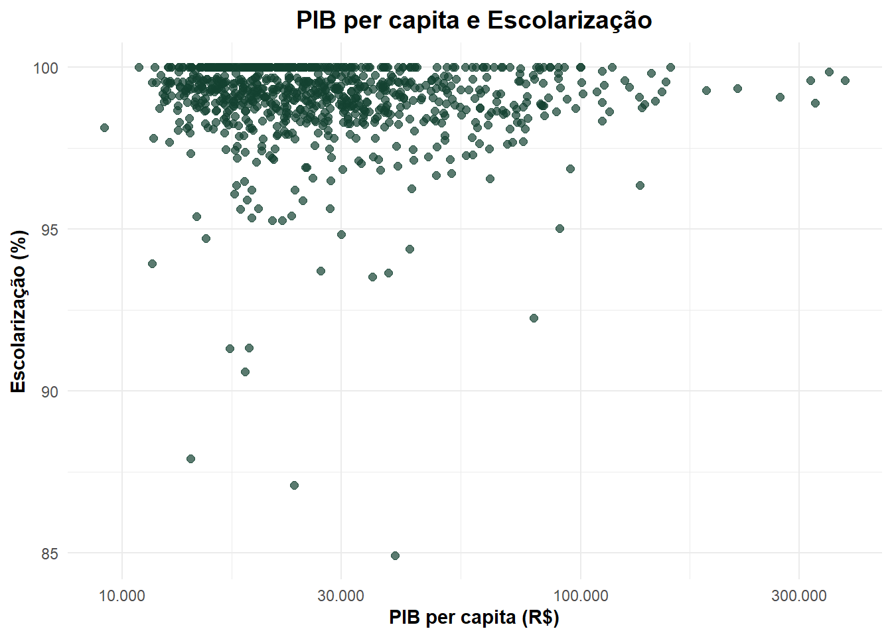
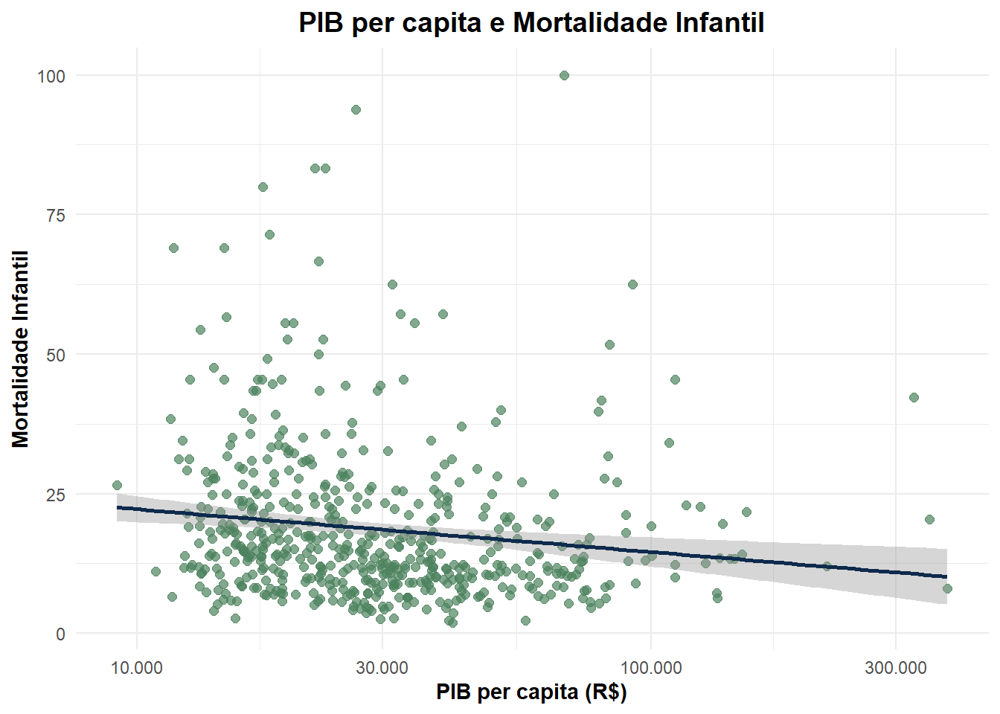
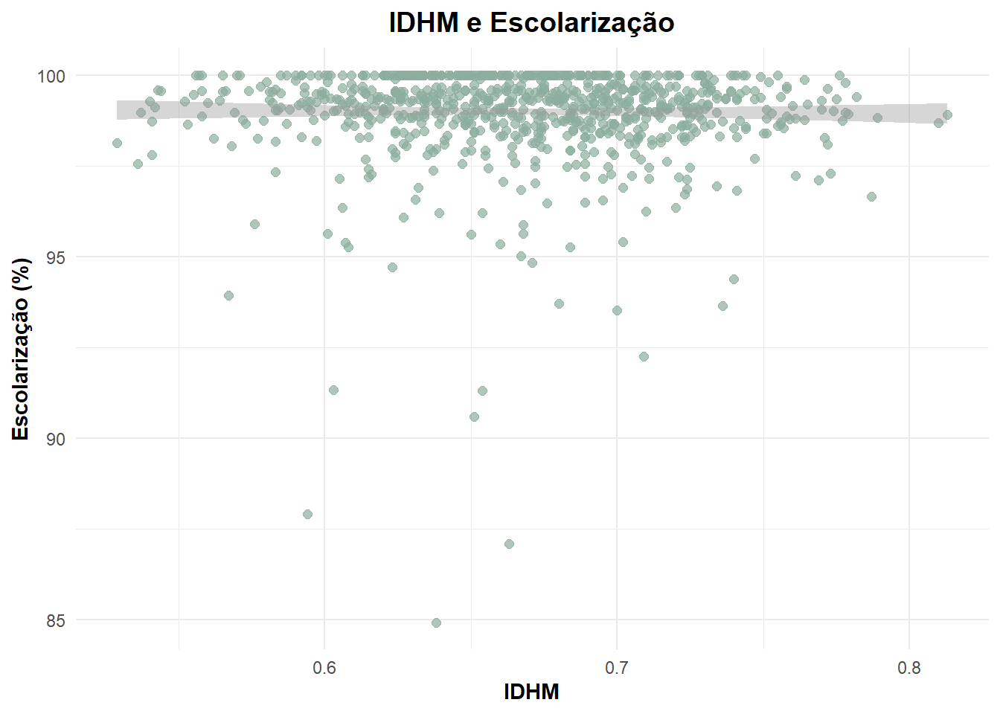
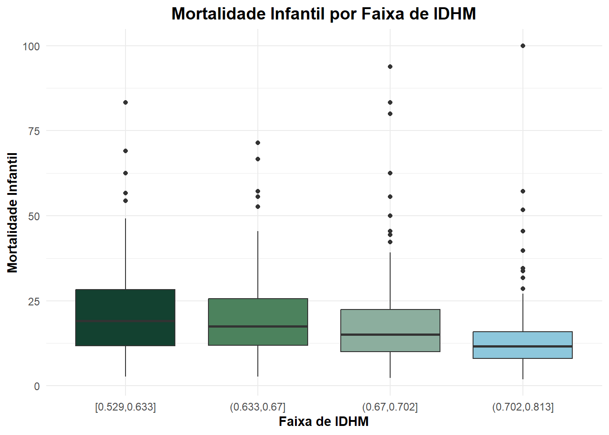
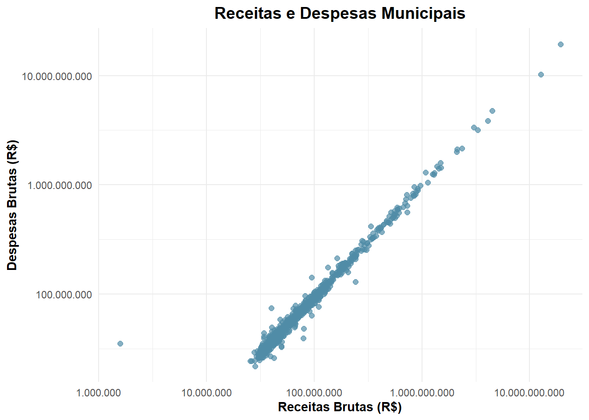

Relatório
1. Introdução
A análise de dados é uma ferramenta importante para compreender diferentes aspectos da realidade social, econômica e demográfica de uma região. A partir da exploração de indicadores estatísticos, é possível identificar padrões, comparar municípios e observar relações entre variáveis que ajudam a explicar fenômenos presentes na sociedade.
Neste trabalho, foi utilizada uma base de dados contendo informações de todos os municípios de Minas Gerais, reunindo indicadores relacionados à população, educação, saúde, desenvolvimento humano, finanças públicas e atividade econômica. A diversidade de informações disponíveis permite uma visão ampla das características dos municípios mineiros e de suas diferenças socioeconômicas.
Inicialmente, foi realizada a leitura e o tratamento dos dados, com o objetivo de verificar a consistência das informações e preparar a base para as análises. Em seguida, foram elaboradas tabelas, medidas descritivas e representações gráficas para explorar o comportamento das variáveis selecionadas.
Além da análise individual dos indicadores, também foram investigadas possíveis relações entre desenvolvimento humano, escolarização, mortalidade infantil, PIB per capita e finanças municipais. Dessa forma, busca-se compreender como diferentes aspectos da realidade socioeconômica dos municípios estão associados, contribuindo para uma interpretação mais ampla dos dados analisados.
2. Leitura e tratamento dos dados
A base de dados foi importada para o R por meio da função read_xlsx() do pacote readxl. O conjunto de dados contém informações referentes aos 853 municípios do estado de Minas Gerais, abrangendo indicadores demográficos, sociais e econômicos.
Inicialmente, foi realizada uma inspeção da estrutura da base utilizando as funções dim(), str() e summary(), com o objetivo de verificar a quantidade de observações, os tipos das variáveis e possíveis inconsistências. Em seguida, os nomes originais das variáveis foram simplificados para facilitar a manipulação e interpretação dos dados ao longo das análises.
Durante a etapa de tratamento, observou-se que a variável de mortalidade infantil havia sido importada como texto devido à presença do símbolo “-”. Como não foi possível concluir se esse símbolo representava ausência de informação ou valor igual a zero, optou-se por convertê-lo para valores ausentes (NA). Posteriormente, a variável foi transformada para o tipo numérico.
Também foi realizada a verificação de valores ausentes, de registros duplicados de municípios e de possíveis inconsistências nos dados. Para isso, foram analisados os intervalos das variáveis numéricas, verificando-se se os valores observados eram compatíveis com a natureza de cada indicador. Não foram identificados municípios duplicados nem valores incompatíveis com os limites esperados das variáveis.
Após essas etapas, a base foi considerada adequada para a realização das análises descritivas, construções gráficas e estudos de associação apresentados nas seções seguintes.
2.1 Tratamentos adicionais para visualização dos dados
Para a construção do gráfico de boxplot que relaciona mortalidade infantil e IDHM, foi criada uma variável auxiliar contendo faixas de IDHM. Essa categorização foi realizada a partir da divisão dos valores de IDHM em quartis, permitindo agrupar os municípios em níveis de desenvolvimento humano semelhantes e facilitar a comparação da distribuição da mortalidade infantil entre os grupos.
Ressalta-se que essa transformação foi utilizada apenas para fins de visualização gráfica, não alterando os valores originais da variável IDHM presentes na base de dados.
3. Medidas de resumo
3.1 Área territorial
Média: 687,59
Mediana: 363,82
Coeficiente de variação: 140,47%
A área média maior que a mediana indica que a maior parte dos dados se concentram em valores mais baixos, ou seja, pode-se afirmar que Minas possui uma grande quantidade de municípios pequenos, enquanto uma menor parte tem muito mais extensão territorial. O coeficiente de variação indica que esses valores possuem uma dispersão muito alta.
3.2 População
Média: 24.079,71
Mediana: 8.048
Coeficiente de variação: 391,84%
O coeficiente de variação indica uma dispersão extremamente alta para os valores de população entre os municípios de Minas Gerais. Novamente, a média maior do que a mediana indica que metade das cidades de Minas possuem 8.048 cidadãos ou menos no momento observado. O a proporção da média 3 vezes maior do que a mediana condiz com o coeficiente de variação obtido.
3.3 Densidade demográfica
Média: 69,09
Mediana: 22,09
Coeficiente de variação: 455,11%
Coeficiente de dispersão extremamente alto. Há muitas cidades com densidade demográfica baixa e poucas com esse valor muito alto, tal qual nas úlltimas análises.
3.4 População estimada
Média: 25.080,24
Mediana: 8.237
Coeficiente de variação: 393,82%
De forma similar à última análise, o coeficiente de variação é extremamente alto. É possível concluir que a população estimada na maioria das cidades é relativamente menor do que em uma pequena quantidade de outros municípios.
3.5 Escolarização
Média: 98,99%
Mediana: 99,29%
Coeficiente de variação: 1,37%
O coeficiente de variação de 1,37% indica dados muito homogêneos. A maior parte dos municípios em Minas possuem taxa de escolarização igual ou menor do que 99,29%. A média de valor menor indica que podem existir algumas cidades com essa taxa menor de forma mais discrepante, puxando a média para baixo.
3.6 IDHM
Média: 0,67
Mediana: 0,67
Coeficiente de variação: 7,43%
Os valores de média e mediana iguais indicam que os dados se apresentam de forma simétrrica. O coeficiente de variação de 7,43% indica que existe pouca variação entre os dados, ou seja, apesar das desigualdades observadas nas outrass variáveis, o IDHM se mantem relativamente estável.
3.7 Mortalidade infantil
Média: 18,66
Mediana: 14,51
Coeficiente de variação: 73,58%
O alto coeficiente de variação indica que os dados são distribuídos de forma não homogênea. A média maior que a mediana indica assimetria à direita, com algumas poucas cidades tendo uma taxa de mortalidade infantil mais distantes da média, refletindo uma possível desigualdade.
3.8 Receitas/Despesas brutas
Médias: 181mi/173mi
Medianas: 56mi/52mi
Coeficientes de variação: 468%/471%
Valores indicam que existe uma distribuição extremamente desigual dos valores. 50% dos municípios possuem renda/despesa na faixa de 50 milhões, no entanto, a média está na faixa de 180 milhões, o que indica que poucas cidades concentram uma movimentação de recursos financeiros fortemente maior.
3.9 PIB per capita
Média: 34.487,09
Mediana: 24.727,70
Coeficiente de variação: 96,62%
Essa análise corrobora com a última ao, através de um alto coeficiente de variação, mostrar que os dados se distribuem de forma assimétrica, ou seja, alguma poucas cidades concentram valores de PIB per capita muito maiores do que a maioria, criando a disparidade entre média e mediana.
4. Análise dos gráficos de associação de variáveis
Para compreender melhor a relação entre os indicadores socioeconômicos dos municípios mineiros, foram elaborados gráficos comparando variáveis relacionadas à educação, à saúde, ao desenvolvimento humano e às finanças públicas. A partir dessas visualizações, é possível identificar tendências e padrões que ajudam a entender como esses indicadores se relacionam entre si.
Para realizar essa análise, além do recurso visual, é possível avaliar uma possível associação entre duas variáveis quantitativas (dados que expressam quantidades, medidas ou valores mensuráveis), por meio de três medidas de correlação. Em geral, essas medidas variam no intervalo de −1 a 1. Quando o valor da correlação é positivo, indica que, se uma delas aumenta, a tendência é que a outra também cresça e, da mesma forma, se uma diminui, a variável associada tende a decrescer. Por outro lado, caso essa medida seja negativa, a relação ocorre de modo que, se uma variável cresce, a outra tende a diminuir, e vice-versa.
Ademais, se o valor de uma das medidas atingir números próximos de 1 ou de −1, indica a existência de uma forte correlação entre as variáveis observadas, isto é, há um relevante grau de dependência entre elas. Caso ela seja próxima de 0, existe uma relação fraca, a qual demonstra pouca associação entre as variáveis.
Para cada tipo de medida, há uma situação a qual melhor se adequa utilizá-la. O Coeficiente de Pearson é normalmente indicado para associações lineares em que os dados não apresentam muita discrepância. Já os Coeficientes de Spearman e de Kendall são calculados a partir da ordenação dos valores em vez dos seus valores brutos, aceitando outliers.
Em relação ao banco de dados analisado, é possível enxergar algumas correlações principais e criar conclusões acerca delas a partir de seus gráficos de dispersão e dos cálculos das medidas desses coeficientes.
4.1 PIB per capita e escolarização
Neste gráfico, observa-se que a escolarização permanece elevada independentemente do nível de PIB per capita do município. Tanto municípios com menor quanto com maior renda apresentam taxas de escolarização muito próximas de 100%.
Embora seja possível notar uma leve tendência positiva, ela não é suficientemente forte para indicar uma relação direta entre as variáveis. Isso sugere que a escolarização básica já está amplamente difundida entre os municípios mineiros, não dependendo exclusivamente do nível de riqueza local.
Essa pouca variabilidade dos níveis de escolarização afeta relativamente os valores das medidas de correlação. Ao calcular os Coeficientes de Pearson, Spearman e Kendall, acha-se os valores -0.0002215448, -0.1242779, -0.0837641, respectivamente. O sinal poderia sugerir uma associação negativa, mas a análise visual do gráfico comprova que, na realidade, a correlação é quase nula. Tais resultados se devem, porque como quase todas as cidades possuem a mesma taxa alta, a linha do gráfico fica constante e, qualquer cidade com PIB muito fora do normal (outlier), puxa o cálculo levemente para o lado negativo.
Portanto, conclui-se que as variáveis não possuem correlação real na prática, e que outros fatores como políticas públicas educacionais e a universalização do acesso à educação básica, podem ter um papel importante nesse resultado de altos índices.
4.2 PIB per capita e mortalidade infantil

Diferentemente do gráfico anterior, a relação entre PIB per capita e mortalidade infantil é mais evidente. Observa-se uma tendência de redução da mortalidade infantil conforme o PIB per capita aumenta.
Esse comportamento pode ser confirmado ao calcular os Coeficientes de Pearson, de Spearman e de Kendall, em que se acham os valores -0.06703182, -0.2258377 e -0.1495825, respectivamente. Comparando os três, nota-se que o primeiro apresenta um resultado muito menor em relação aos outros dois porque o PIB possui uma quantidade de valores que variam muito entre si (outliers). Logo, torna-se mais adequado olhar para as duas últimas medidas (-0.2258377 e -0.1495825), as quais são negativas e demonstram que, conforme uma das variáveis cresce, a outra tende a diminuir. Ademais, como esses valores variam no intervalo de 0 a 0,4, há uma correlação fraca entre elas, o que não significa que ela não exista.
Tal percepção sugere que municípios mais ricos tendem a oferecer melhores condições de saúde, infraestrutura e saneamento, fatores que contribuem diretamente para a redução dos óbitos infantis, o que reforça a importância das condições econômicas para os indicadores de saúde.
4.3 IDHM e escolarização

Ao observar o gráfico, percebe-se uma tendência positiva entre o IDHM e a taxa de escolarização. Em geral, municípios com melhores índices de desenvolvimento humano apresentam taxas de escolarização ligeiramente mais altas.
No entanto, a maioria dos municípios está concentrada próxima ao valor máximo de escolarização, o que revela que esse indicador já apresenta níveis bastante elevados em Minas Gerais. Por isso, embora exista uma relação positiva entre as variáveis, as diferenças observadas não são muito expressivas.
Esse comportamento é muito semelhante ao observado no par anterior de PIB e escolarização. Tal comportamento afeta diretamente o valor das medidas de correlação, pois ao calcular os Coeficientes de Pearson, Spearman e Kendall, acha-se os valores -0.01375387, -0.08892231, -0.05968151, respectivamente. O valor negativo se deve, pois como a escolarização permanece muito alta e concentrada independentemente do nível de IDHM do município, há algumas flutuações que puxam o valor para baixo, embora a correlação entre elas seja quase nula. São exemplos de municípios com IDHM menor, mas que conseguem registrar 100% de escolarização e de cidades com IDHM mais elevado apresentam taxas ligeiramente menores.
De modo geral, o gráfico sugere que municípios mais desenvolvidos tendem a apresentar melhores indicadores educacionais, mas a alta cobertura escolar faz com que essa relação apareça de forma menos evidente, tornando-a relativamente homogênea.
4.4 Mortalidade infantil por faixa de IDHM

O gráfico de boxplot mostra como a mortalidade infantil se comporta em diferentes faixas de IDHM. A principal tendência observada é a redução da mortalidade infantil à medida que o IDHM aumenta. Em suma, as faixas com menor desenvolvimento humano apresentam valores mais elevados de mortalidade, enquanto os municípios com IDHM mais alto concentram os menores índices.
Nesse contexto, o cálculo de correlações comprova tal comportamento ao resultar valores de Coeficientes de Pearson, Spearman e Kendall em -0.2375371, -0.3137683, -0.2105332, respectivamente. O valor negativo demonstra que enquanto uma variável cresce (IDH), há o decrescimento da outra (mortalidade). Além disso, é importante ressaltar que como esses resultados obtidos variam no intervalo de 0 a 0,4, há uma correlação fraca entre elas, o que não significa que ela não exista.
Tal percepção pode estar relacionada a fatores como melhores condições de vida, maior acesso aos serviços de saúde e melhores níveis de educação. Dessa forma, o gráfico reforça a ideia de que municípios com maior desenvolvimento humano tendem a oferecer condições mais favoráveis para a saúde da população.
4.5 Receitas e despesas municipais

O gráfico que relaciona receitas e despesas municipais apresenta a associação mais clara entre todas as analisadas. Os pontos formam uma trajetória bastante próxima de uma linha reta linear crescente, indicando que municípios que arrecadam mais também tendem a gastar mais.
Esse destaque significativo é igualmente visto nas medidas de correlação, de modo que os Coeficientes de Pearson, de Spearman e de Kendall resultaram nos valores de 0.9952322, 0.9820892 e 0.9051228, respectivamente. Esse resultado evidencia não só o sinal positivo, o qual indica que as variáveis caminham no mesmo sentido (se uma cresce, a outra também aumenta), como também revela uma associação muito forte entre elas, já que os coeficientes estão no intervalo entre 0,7 e 1.
É importante destacar, que tal resultado era esperado, uma vez que a capacidade de investimento e de manutenção dos serviços públicos depende diretamente dos recursos disponíveis em cada município. Logo, o gráfico demonstra uma forte relação entre arrecadação e gastos públicos, refletindo a dinâmica financeira das administrações municipais.